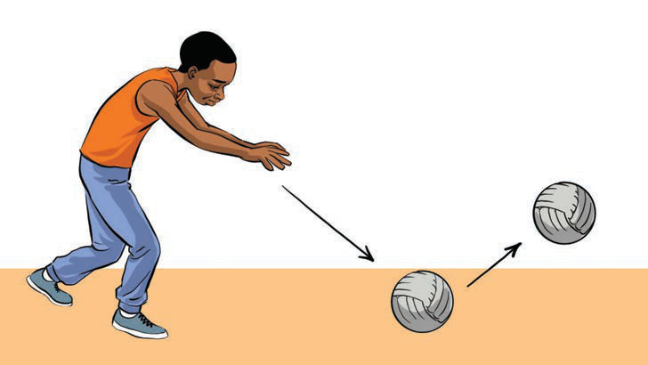

Bounce pass
A bounce pass is the passing of the ball whereby the ball is thrown so as to bounce once before it reaches the receiving player. The ball is held with two hands while directing it to the bouncing point and released at an angle to bounce hard towards the teammate. This type of pass prevents the opponent from catching it as the ball is strategically directed to a teammate. It is often done for a short distance, as shown in Figure 11.

High pass
A high pass is the passing of the ball from the top of one player’s head to another player at a distance. This pass is often used when a player needs to deliver the ball over a long distance or when they want the ball to go over the obstacles of the opposing team. To make this pass, the player stands upright, takes the ball with both hands behind the head, and then pushes it forward with force and accuracy to reach the distant player, as shown in Figure 12.